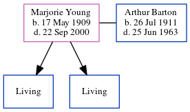

Marjorie Annie Crayford Barton (née Young) 1909 - 2000
[ Home ] | [ Calendar ] | [ Surnames Index ] | [ Census Index ] | [ Family History ]A teacher, Marjorie Young, the wife of Arthur George Barton (the first cousin once-removed on the father's side of Nigel Horne), was born in Herne Bay, Kent, England on May 17, 19091,2,3,4 and. She married Arthur (with whom she had 2 surviving children Brian C and Christopher J) in Blean, Kent, England around Aug 19367.
During her life, she was living at Spicers Farm, Broomfield, Reculver, Kent on Apr 2, 19111; and at Three Ways, Reculver Road in Herne Bay on Sep 29, 19392.
She died on Sep 22, 2000 in Staffordshire, England4,5,6.
Citations
- 1911 Census for England & Wales - Findmypast (was age 1 and the daughter of the head of the household)
- 1939 Register - Findmypast (was recorded at this address)
- England & Wales births 1837-2006 - Findmypast
- England & Wales deaths 1837-2007 - Findmypast
- England & Wales Government Probate Death Index 1858-2019 - Findmypast
- https://probatesearch.service.gov.uk/Wills?Surname=barton&SurnameGrants=barton&YearOfDeath=2000&YearOfDeathGrants=2000&IsGrantSearch=True&IsCalendarSearch=False&sort=FirstName&sortdir=ASC&page=5#wills
- England & Wales Marriages 1837-2005 - Findmypast
Media
England & Wales marriages 1837-2005 - BMD/M/1936/3/AZ/001841/119
1911 Census for England & Wales - GBC/1911/RG14/04360/0219/4
England & Wales births 1837-2006 - BMD/B/1909/2/AZ/000684/286
1939 Register - TNA-R39-1741-1741D-003-26
England & Wales Deaths 1837-2007 - BMD-D-2000-9-83517263
England & Wales Government Probate Death Index 1858-2019 - GBOR/GOVPROBATE/B/1999-1900/00023483
Family Tree
Generated by ged2site. Last updated on Jun 11, 2024